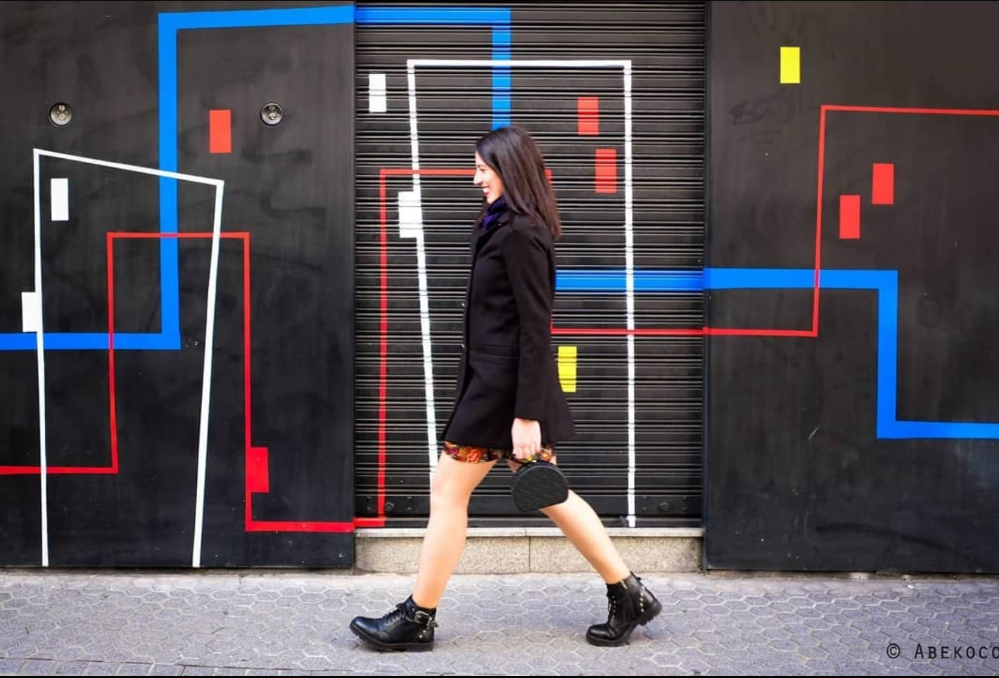
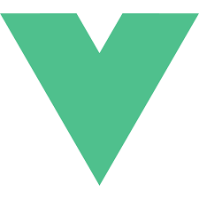
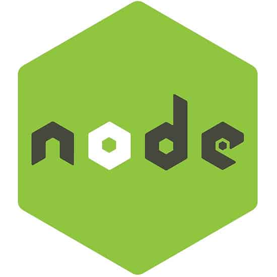
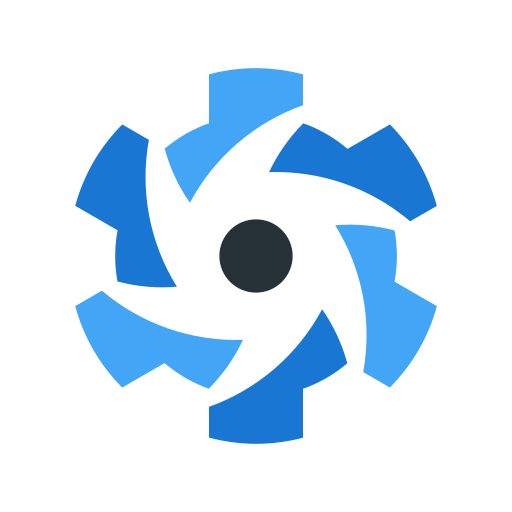
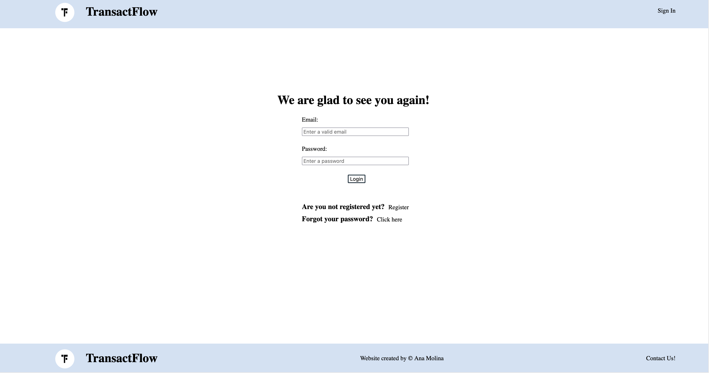
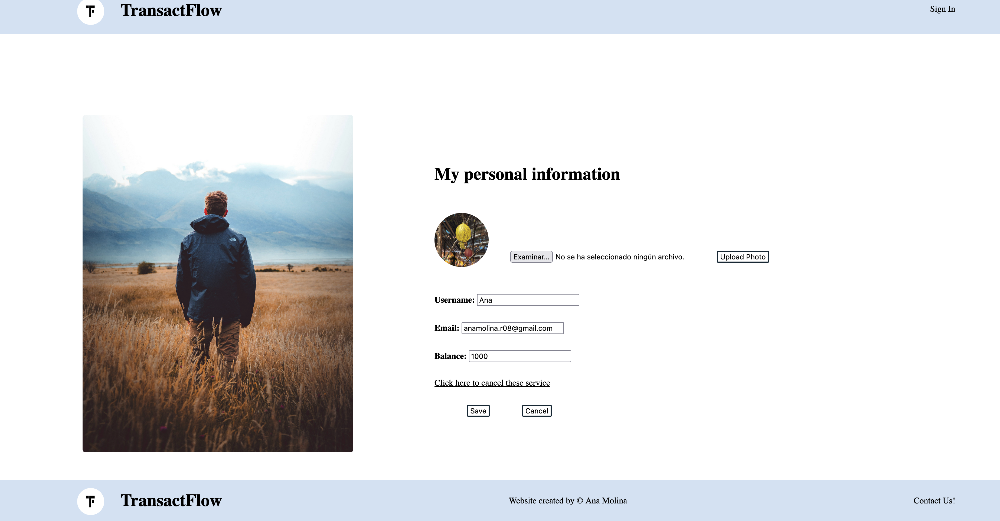
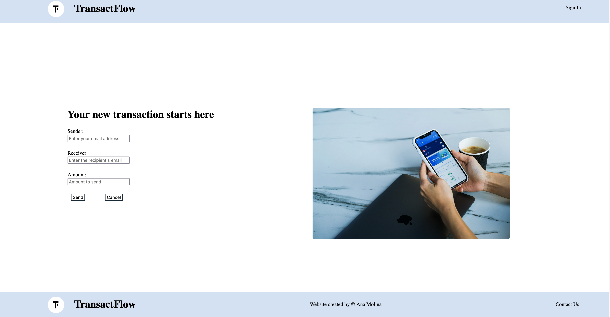
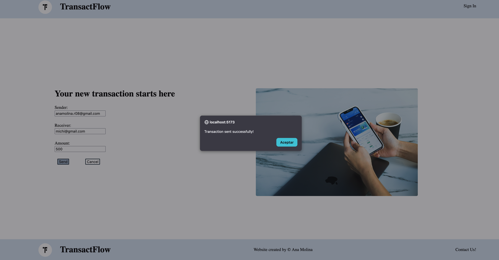
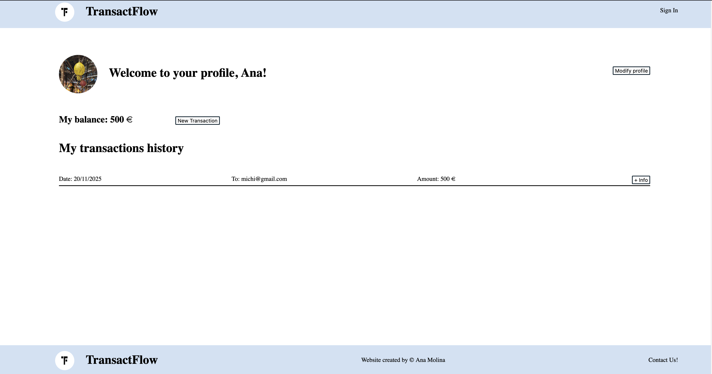
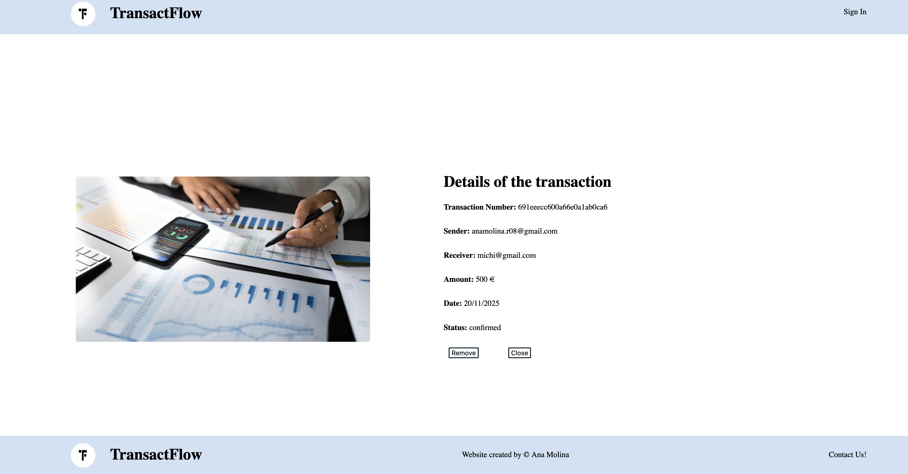

¿Quien soy?

Desarrolladora Full Stack con experiencia real en proyectos en producción, especializada en React, Node.js y MongoDB, con integración de IA y pasarelas de pago.
Empecé descifrando a Platón y Aristóteles, y acabé descifrando bugs. Después de pasar por sectores tan variados como difíciles de explicar, descubrí que la programación es ese lugar donde la lógica se encuentra con la creatividad y donde cada problema es un acertijo que puedo resolver con JavaScript, Vue, React y Node.js.
Me encanta crear soluciones web que no solo funcionan, sino que sorprenden al usuario, y busco proyectos desafiantes donde pueda aplicar mis habilidades fullstack y seguir aprendiendo.
Mis habilidades

HTML

CSS

JavaScript
React

Vue

Node.js
Express

MySQL

MongoDB

GitHub

Quasar

Firebase

Brevo
Digital Ocean
Mis proyectos






